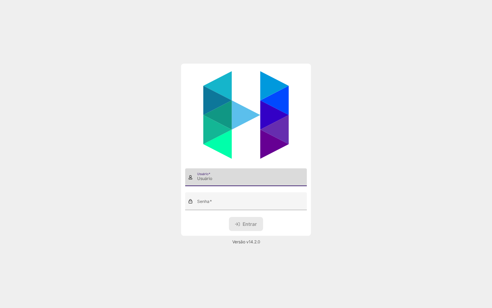
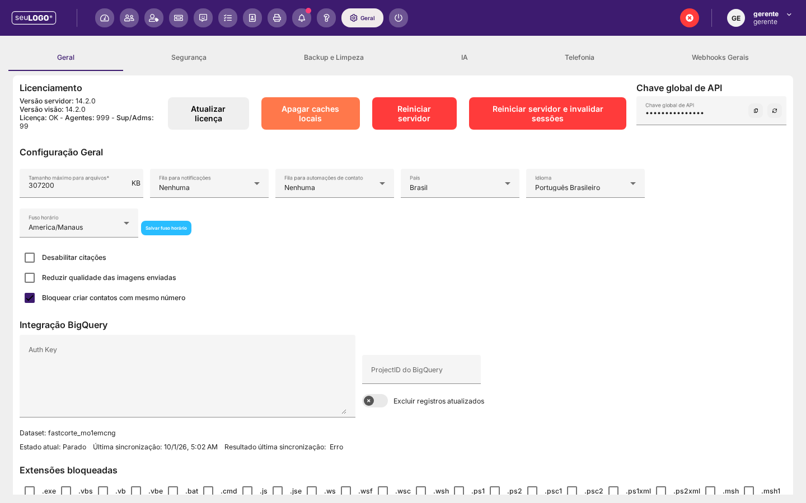
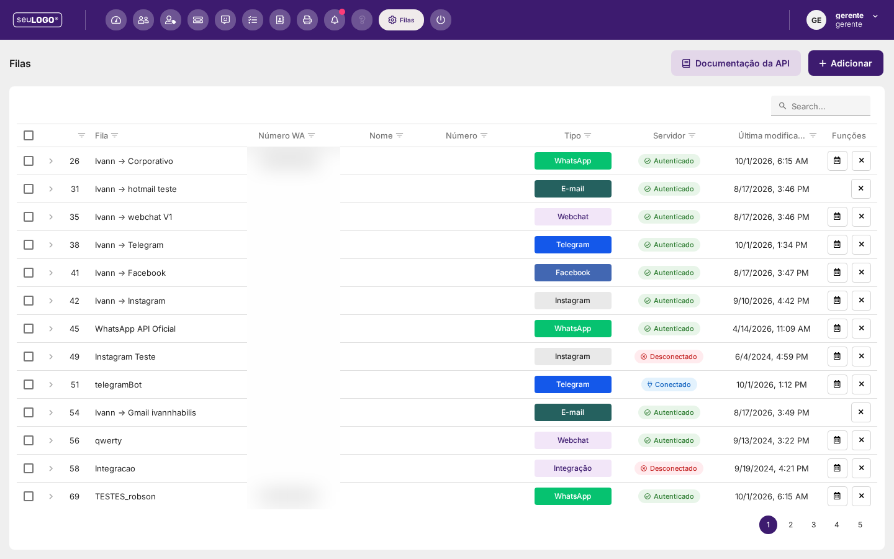
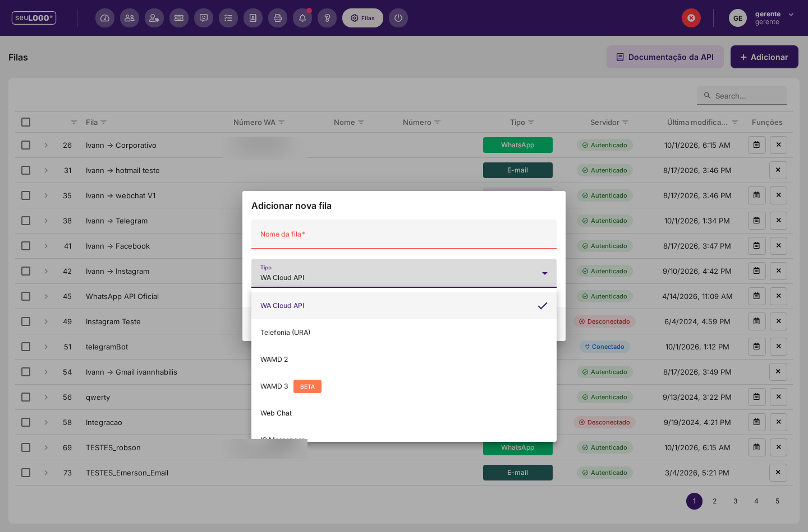
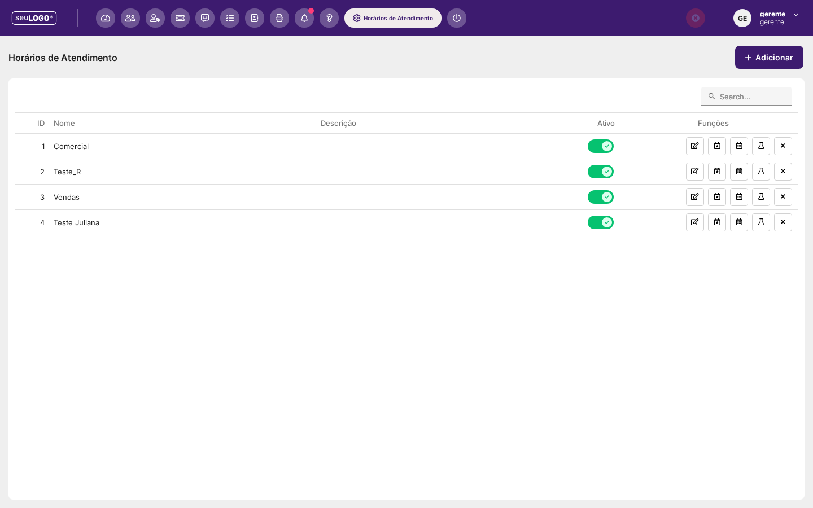
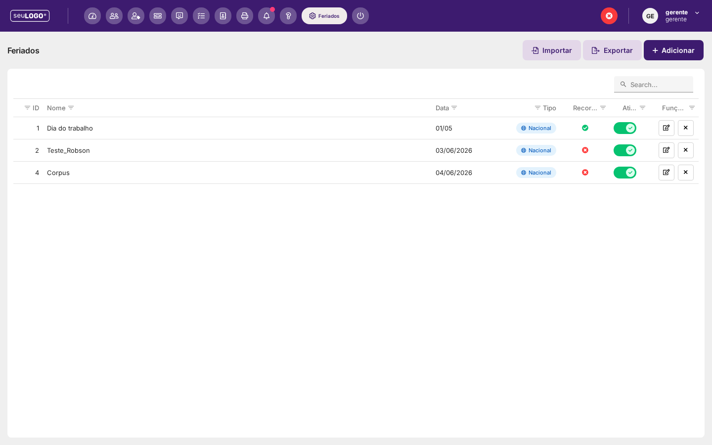
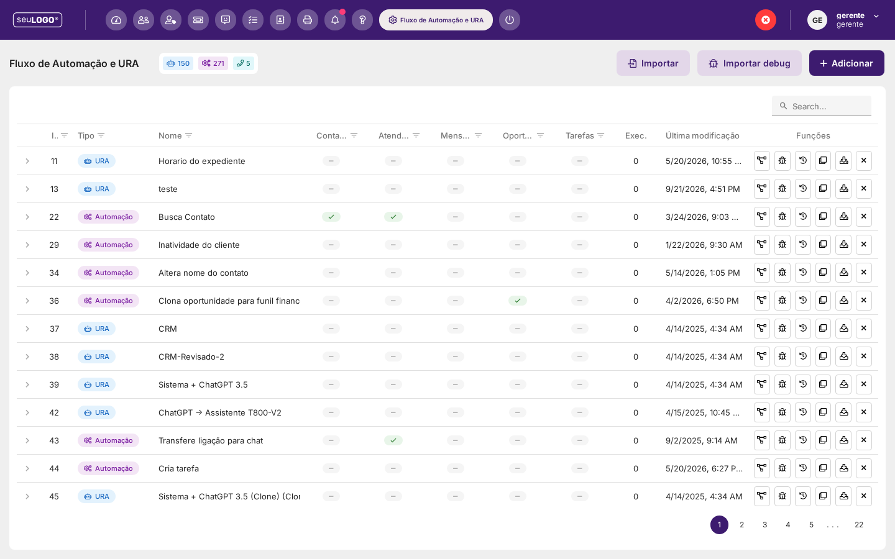
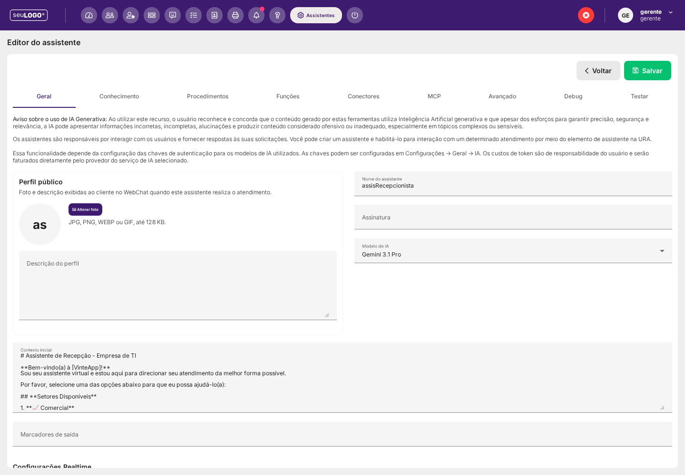
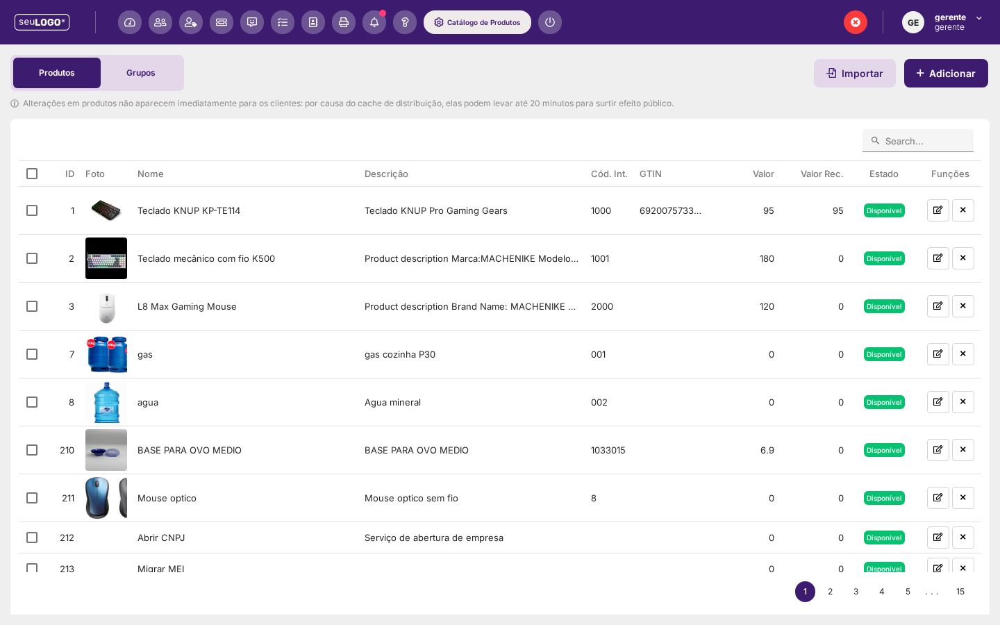

Novidades da Versão 14.2
O que muda na versão 14.2 em relação à linha 14.1.x documentada nos capítulos de IA, Canais e Carrinho Sincronizado.
1. Como identificar a versão instalada
A versão do sistema aparece em dois pontos, ambos de leitura imediata:
- Rodapé da tela de login — exibe
Versão v14.2.0antes mesmo de autenticar. - Configurações → Geral → Licenciamento — mostra Versão servidor e Versão visão lado a lado (as duas em
14.2.0nesta instância), além de Licença, número de Agentes e de Sup/Adms, e os botões Atualizar licença, Apagar caches locais, Reiniciar servidor e Reiniciar servidor e invalidar sessões.


A aba Geral traz ainda abas irmãs Segurança, Backup e Limpeza, IA, Telefonia e Webhooks Gerais. Em Configuração Geral estão Tamanho máximo para arquivos (KB), Filas/Arquivos de notificação e de automações de contato, País, Idioma, Fuso horário (com botão Salvar fuso horário) e as opções Desabilitar citações, Reduzir qualidade das imagens enviadas e Bloquear criar contatos com mesmo número. Ao final aparecem a integração BigQuery (Auth Key, ProjectID, Dataset, estado/última sincronização) e a lista de Extensões bloqueadas (.exe, .vbs, .bat, .js, .ps1 e outros).
2. Filas e canais de atendimento
O diálogo Adicionar nova fila pede apenas Nome da fila e Tipo. O tipo é imutável após a criação — para trocar de canal é preciso criar outra fila.


2.1 Tipos oferecidos na interface
Nesta instância (v14.2.0), o seletor Tipo lista os canais abaixo, nesta ordem — são exatamente os rótulos exibidos:
| Rótulo exibido | Observação |
|---|---|
| WA Cloud API | Canal oficial WhatsApp (selecionado por padrão no diálogo). |
| Telefonia (URA) | Telefonia com URA. |
| WAMD 2 | Conexão não oficial. |
| WAMD 3 BETA | Conexão não oficial, marcada como BETA. |
| Web Chat | App Web / WebChat. |
| IG Messenger | Instagram Messenger. |
| FB Messenger | Facebook Messenger. |
| E-mail BETA | Canal de e-mail. |
| Telegram | Telegram. |
| WA Cloud API (Dev App) | Cloud API via Dev App. |
| WA Dialog 360 BETA | Provedor Dialog 360. |
| WA Smarte BETA | Provedor Smarte. |
| WA Gupshup BETA | Provedor Gupshup. |
| Integrações BETA | Fila de integração genérica. |
| Integrações 2 BETA | Segunda variante de integração. |
| Telefonia (Fila de atendimento) | Telefonia sem URA (fila de voz convencional). |
2.2 Novos tipos de canal na API — atenção à divergência com a interface
O schema da ferramenta queues_create (MCP) aceita, além dos anteriores, quatro tipos de canal de marketplace:
| Tipo | Canal | Regras descritas na própria API |
|---|---|---|
28 | TikTok Business Messaging | Nestes quatro canais: (a) apenas TEXTO puro — sem mídia, botões, listas, catálogo ou carrinho; (b) Mercado Livre e TikTok Business Messaging não permitem iniciar conversa, só responder quem escreveu primeiro; (c) a autorização OAuth da conta é feita somente pelo painel, na tela da fila — criar a fila pela API não a deixa conectada. |
29 | OLX | |
30 | Mercado Livre (perguntas dos anúncios e pós-venda) | |
31 | TikTok Shop |
A mesma descrição registra uma renumeração de canais: os tipos 6 e 7 deixaram de ser OLX e Mercado Livre — as filas desses canais passaram para 29 e 30. Os valores 6 e 7 não servem para fila nova. Atendimentos antigos de OLX/Mercado Livre permanecem registrados com 6 e 7 no histórico.
2.3 Outros tipos citados na API
Para referência de integração, a descrição de queues_create também define: 0 = Telefonia/Voz convencional (segura o cliente em espera e entrega a um atendente); 22 = Telefonia com URA; 26 = WebChat V2 (o App Web moderno); 27 = Telegram unificado (conta do Telegram por QR + bot na mesma fila). Os tipos 3 (Telegram) e 11 (Telegram Bot) foram descontinuados: a criação é recusada; filas já existentes seguem funcionando. O Carrinho sincronizado vale no tipo 26, nas filas com Catálogo sincronizado local — Facebook (2), Telegram (3/11/27), WhatsApp MD (5), WhatsApp Cloud API (10/21), Instagram (12) e Genérica 2 (24) — e nas duas de telefonia (0 e 22).
Campos de criação aceitos por queues_create: name, type, number, ivrid, maxchatsperagent, distributionstrategy, fk_businesshours_config e advanced.
3. Horários de Atendimento
O módulo Horários de Atendimento ganhou uma família completa de ferramentas MCP (leitura e escrita), o que o torna automatizável: businesshours_list/get/create/update/delete, businesshours_check, businesshours_special_dates_* e businesshours_holidays_*.

Regras de decisão descritas pela própria plataforma:
- Prioridade: data especial > feriado global > horário semanal.
- Catálogo de feriados é global: vale para todas as tabelas de horário.
- Exceções por data são por tabela e têm prioridade sobre feriado e sobre o horário semanal.
- Tabela sem
holidayConfigfica FECHADA em todo feriado global. - Dia da semana ausente em
weeklySchedulesé considerado FECHADO.
A tabela de horários é referenciada por filas de atendimento e de telefonia, por usuários, por motivos de ticket e pelo acompanhamento de assistentes.
4. Feriados

A tela de Feriados permite Importar e Exportar o calendário, além de Adicionar e remover registros. Cada registro tem Nome, Data, Tipo (ex.: Nacional), Recorrência e o interruptor Ativo. Como o catálogo é global (seção 3), um feriado ativo aqui afeta todas as tabelas de horário que não tenham tratamento próprio para a data.
5. Fluxo de Automação e URA
A página de automações aparece como Fluxo de Automação e URA, com contadores por categoria no topo (nesta instância: URA e Automação) e os botões Importar, Importar debug e Adicionar.

Colunas da lista: ID, Tipo (URA / Automação), Nome, Contatos, Atendimentos, Mensagens, Oportunidades, Tarefas, Execuções e Última modificação. As colunas de capacidade aparecem com marca de conferido quando o fluxo usa aquele recurso, e traço quando não usa — útil para auditar rapidamente o que cada fluxo faz.
O módulo passou a ter versionamento via API: automations_list_revisions, automations_get_revision, automations_diff_revisions e automations_restore_revision. Cada gravação que muda o fluxo gera uma versão; são guardadas as 10 versões mais recentes por fluxo; restaurar é uma gravação nova (portanto desfazível) e devolve também as credenciais do momento; fluxos bloqueados são recusados. Esse histórico é acessível pela API — é o que sustenta o ícone de agenda na coluna Funções e o botão de teste/validação.
6. Assistentes de IA
O editor de assistente (Editor do assistente) organiza a configuração em abas: Geral, Conhecimento, Procedimentos, Funções, Conectores, MCP, Avançado, Debug e Testar.

Na aba Geral observam-se, entre outros: Iniciar conversa proativamente; as opções de processamento de arquivos (PDF, áudio, vídeo, imagem); Somente copiloto, Permitir envio de mensagens em nome do agente, Somente URA, Permitir uso de botões, Enviar eventos de processamento, Mostrar “digitando...” ao cliente e Considerar mensagens recebidas durante as consultas; automação de pré e pós-processamento; e o bloco Resultado (resultado ao transferir / ao encerrar, para relatórios e análise de desempenho).
6.1 Acompanhamento automático ligado a horário
O acompanhamento automático (já descrito no capítulo de IA) passou a aceitar vínculo com tabela de Horário de Atendimento e passou a ter controle de janela. Os campos novos na configuração do assistente:
| Campo | O que faz |
|---|---|
businesshours (por acompanhamento) | Vincula cada retomada a uma tabela de horário; fora da janela o acompanhamento é adiado ou descartado. |
turnfollowupoutside | Fora da janela: 1 adia o acompanhamento; 0 descarta aquele acompanhamento. |
turnfollowupshift | Ao adiar: mantém o horário, desloca a cadência ou cancela os acompanhamentos seguintes. |
turnfollowupwindow | Validade da sequência (0–168 h; padrão 23 h) contada desde a última mensagem do cliente. Excedida, todos os acompanhamentos pendentes são cancelados. |
turnfollowupwindow × 3600 nunca dispara — e ainda cancela os acompanhamentos pendentes. Com o padrão de 23 h, delays entre 82.800 e 86.400 s são “letra morta”. Ajuste a janela antes de configurar delays longos.
A orientação de retomada passou a aceitar variáveis (por exemplo {{contactName}}, {{clientNumber}}), resolvidas no instante de cada disparo.
6.2 Geração de áudio (TTS)
A ferramenta de arquivos files_generate_speech gera áudio a partir de texto (OpenAI, Google AI Studio ou OpenRouter). O arquivo nasce na instância (fileId, mimetype, downloadPath) e, com saveToGallery=true, passa a ser item da galeria — nesse caso o campo title é obrigatório. Complementa o elemento “Gerar áudio com IA” das automações (que exige chave OpenAI) com a via de API e o salvamento em galeria.
7. Catálogo de Produtos

A lista de produtos expõe as colunas ID, Foto, Nome, Descrição, Cód. Int., GTIN, Valor, Valor Rec. (valor recomendado) e Estado (ex.: Disponível). Há um aviso de cache no topo: “Alterações em produtos não aparecem imediatamente para os clientes; por causa do cache de distribuição, elas podem levar até 20 minutos para surtir efeito público.”
Dois itens novos fecham o ciclo com o Carrinho Sincronizado e a expansão de alternativas do assistente:
- Anexos ao produto por feed/CSV/XML: o feed de importação passou a poder trazer também os arquivos do produto, e não só os campos.
- “Não exibir preços no catálogo”: campo da fila (
localcataloghideprices, padrão desligado). Só vale com Catálogo sincronizado LOCAL ativo; a vitrine, o carrinho e as mensagens de produto saem sem preço, mas o painel do atendente/supervisor continua mostrando o preço.
O Cód. Int. (código interno) é o vínculo usado pelo recurso Expandir alternativas do assistente: quando um produto não está disponível, o assistente identifica a alternativa correta por esse vínculo. Sem o vínculo cadastrado, a expansão não tem como escolher a alternativa certa.
8. Campanhas
A tela Campanhas (BETA) lista ID, Nome, Tipo (ex.: Marketing), Template, Fila, Msgs, Teste, Estado (ex.: Enviado) e Data, com as funções iniciar/gerenciar/exportar/remover. A API de campanhas ganhou o campo hourlylimit: um limite de disparos por janela deslizante de 60 minutos (0 ou ausente = sem limite), para não sobrecarregar a entrada de atendimentos.
9. Método e incertezas
- Onde conferir: Configurações → Geral, Filas, Horários de Atendimento, Feriados, Fluxo de Automação e URA, Assistentes, Catálogo e Campanhas. As mesmas opções estão expostas no catálogo de ferramentas do sistema (
queues_create,businesshours_*,assistants_update,campaigns_create, entre outras). - Modo somente leitura: nenhuma configuração foi criada, alterada ou removida. Formulários foram abertos apenas para leitura e fechados sem salvar.
- Incertezas assumidas: (1) a presença dos tipos de canal 28–31 no schema da API sem oferta correspondente na tela de criação de fila (seção 2.2); (2) os parâmetros exatos de tempo/lote do delay e agregação de mensagens em filas Cloud API (v14.1.10) não são detalhados pela plataforma; (3) os nomes dos campos de API seguem a documentação do MCP e podem variar de rótulo na tela.
- Privacidade: nas capturas de tela com números de WhatsApp, a coluna foi borrada antes de entrar neste capítulo.